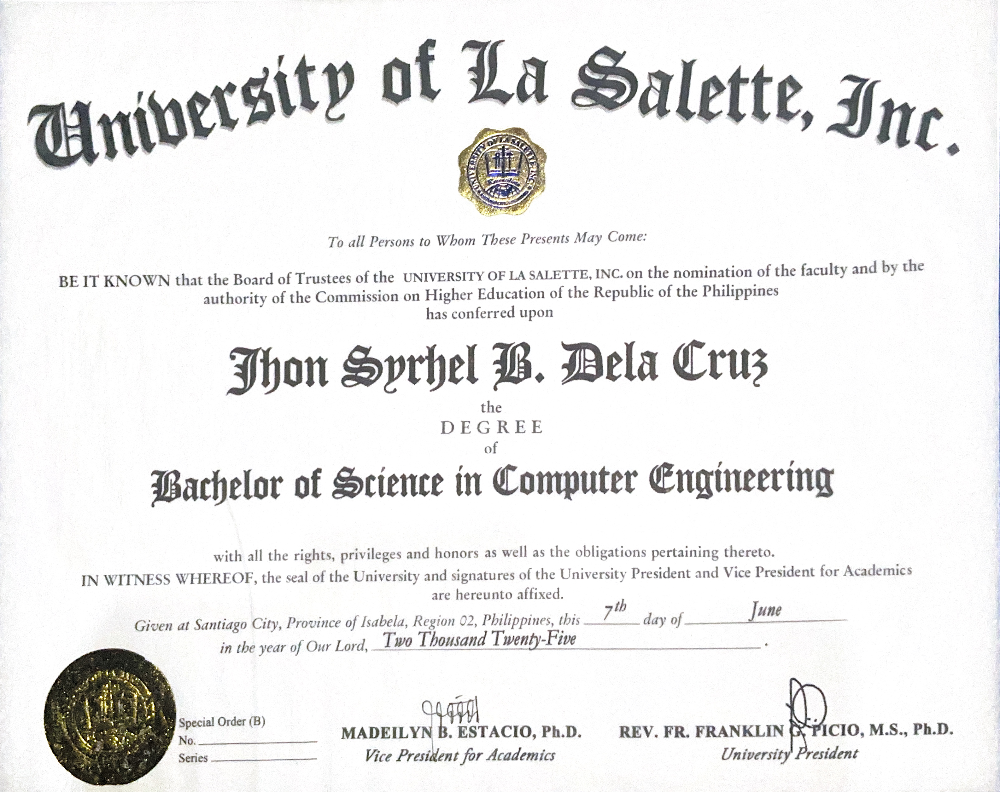

Computer Engineering
My academic background and the achievements I'm proud of from my student years.

About my studies
My journey in Computer Engineering at the University of La Salette, Inc. was driven by my passion for technology, problem-solving, and understanding how hardware and software work together. Throughout my studies, I developed a strong foundation in programming, computer systems, networking, database management, and system development. The program challenged me to think critically, approach technical problems creatively, and continuously adapt to emerging technologies.
Beyond academics, I gained practical experience by developing projects that applied technology to real-world challenges. These included a YOLOv8 and PaddleOCR-powered License Plate Recognition System and a Python-based QR Code Attendance System, which was successfully deployed during the 2024 Regional Convention of the Institute of Computer Engineers of the Philippines – Student Edition at the University of La Salette, Inc. These experiences strengthened my skills in Python programming, computer vision, OCR, system integration, troubleshooting, and project development..
Notable achievements
Developed a YOLOv8 and PaddleOCR-Based License Plate Recognition System
Designed and developed a system that combines YOLOv8 object detection and PaddleOCR text recognition to detect vehicles and extract license plate information, demonstrating practical applications of computer vision and artificial intelligence.
Successfully Deployed a QR-Based Attendance System – 2024
Developed and implemented a Python-based QR Code Attendance System used during the Regional Convention of the Institute of Computer Engineers of the Philippines – Student Edition in 2024 at the University of La Salette, Inc.
Bachelor of Science in Computer Engineering Graduate – 2025
Successfully completed the Bachelor of Science in Computer Engineering program at the University of La Salette, Inc., Academic Year 2024–2025, building a solid foundation in software development, hardware systems, networking, and information technology.